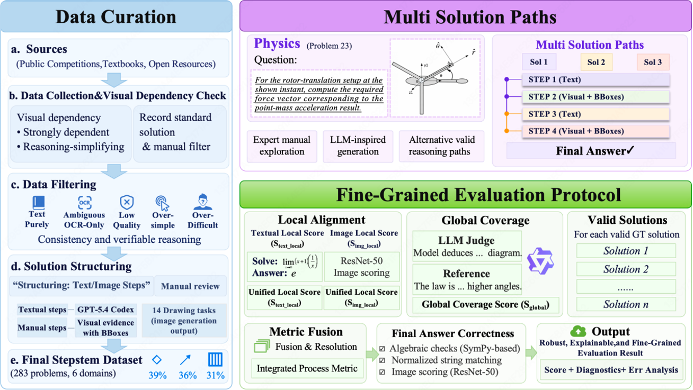

NeurIPS2026
Unveiling Fine-Grained Visual Traces: Evaluating MultiModal Interleaved Reasoning Chains in Multimodal STEM Tasks
Hao Liu · Co-first author
StepSTEM evaluates interleaved text and visual reasoning at the process level, going beyond final-answer accuracy.